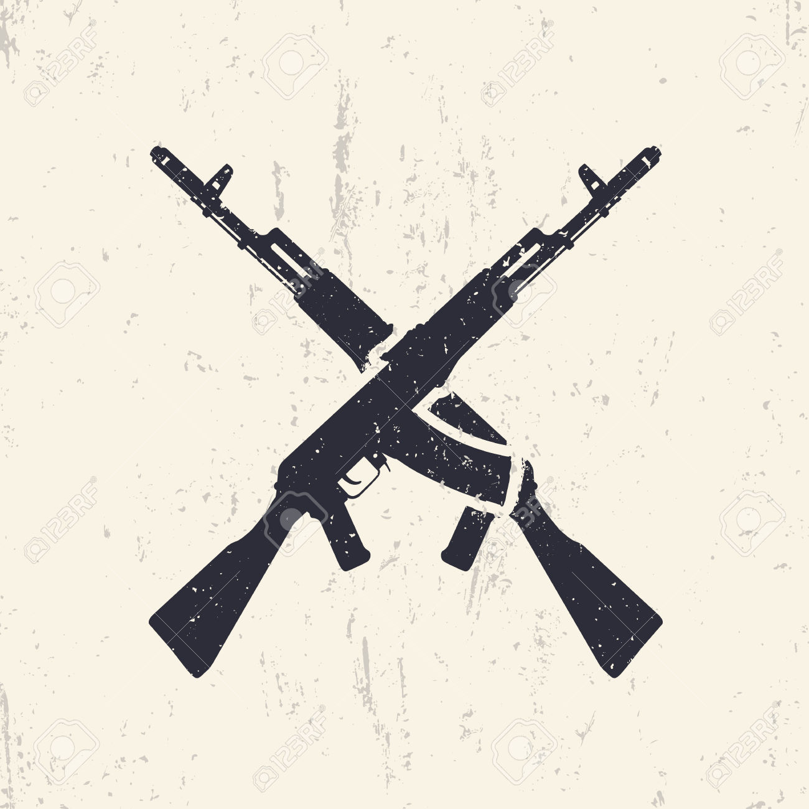
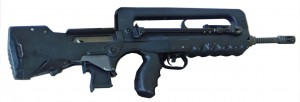
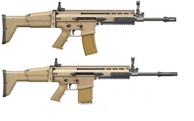
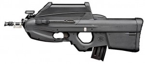
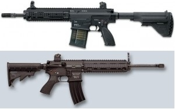

Fuzis
Felipe Matos Macedo Teles
Os fuzis mais usados no mundo:

O AK105 (5,45x39mm) é um desenvolvimento do AK47 dentro da série AK10X, sendo o AK101 (5,56x45mm) e AK103 (7,62x39mm). O seu ponto forte é a sua fácil manutenção e robustez. Calibre: 5,45x39mm; Cadência do Tiro: 600tpm; Alcance eficaz: 400; Peso: 3,4 quilos; Comprimento total: 943mm; Comprimento do cano: 415mm;

O FAMAS (Fuzil de Assalto da Manufatura de Armas de Santa Ettiene) é um fuzil do tipo bullpup, desenvolvido para manter um comprimento de cano grande, sem aumentar o tamanho do fuzil e ainda para poder ser usado em viaturas e combates em locais estreitos, como vielas e residências. Os modelos bullpup em geral não são bem vistos por quem está acostumado com fuzis clássicos, devido à dificuldade em trocar o carregador em combate. Calibre: 5,56x45mm; Cadência do Tiro: 1000-1100tpm; Alcance eficaz: 450m; Peso: 3,8 quilos; Comprimento total: 757mm; Comprimento do cano: 488mm;

O FN SCAR foi desenvolvido pela FNH (Fabrique Nationale de Herstal) da Bélgica, em conjunto com os Estados Unidos, para suprir os requisitos das Forças Especiais dos EUA. O FN SCAR é uma série completa de fuzis que tem diferentes comprimentos de canos, para uso conforme a necessidade e tem duas variantes, sendo a Light (SCAR-L) em calibre 5,56x45mm e a Heavy (SCAR-H) em calibre 7,62x51mm. Seu grande ponto forte é uso de materiais compostos que deixam o fuzil mais leve, seu novo sistema de coronha que é telescópica e rebatível, além do seus vários canos que podem ser trocados com facilidade. Hoje o FN SCAR é a grande “vedete” dos fuzis em uso. SCAR – Versão Standart; Calibre: 5,56x45mm(L) / 7,62x51mm(H); Cadência do Tiro: 600tpm(L)(H); Alcance eficaz: 450m; Peso: 3,5 quilos(L) / 3,86 quilos(H) – ambos vazio; Comprimento total: 850mm(L) / 920(H); Comprimento do cano: 355mm(L) / 405mm(H);

O FN 2000, assim como o FAMAS, é um fuzil do tipo bullpup, desenvolvido pela FNH (Fabrique Nationale de Herstal) da Bélgica e tem seu corpo todo em material composto. O ponto forte desse fuzil é que ele pode ser operado por destros e canhotos sem necessidade de alterar nada, pois os cartuchos usados são ejetados para frente. Calibre: 5,56x45mm; Cadência do Tiro: 850tpm; Alcance eficaz: 500m; Peso: 3,8 quilos; Comprimento total: 690mm; Comprimento do cano: 400mm;
